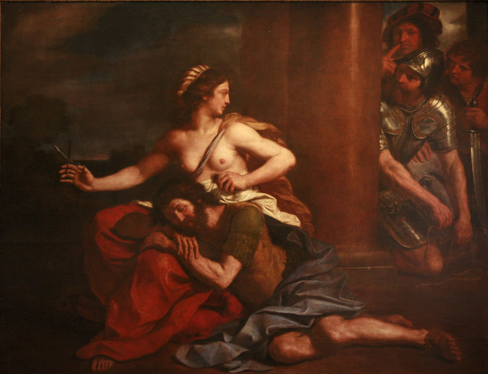
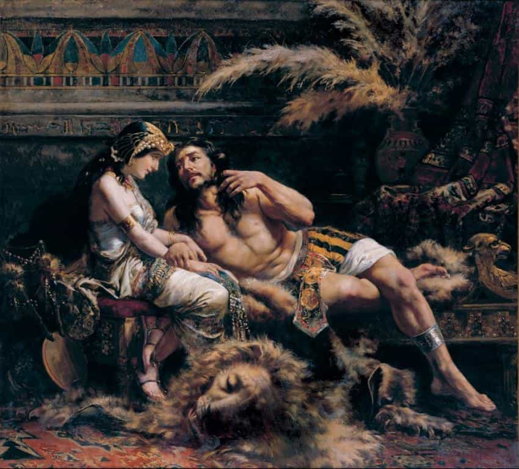

< < < Back
Samson’s Tale Cautions Against Dark Triad Women – Return Of Kings
“Find out each man’s thumbscrew. ‘Tis the art of setting their wills in action. It needs more skill than resolution. You must know where to get at anyone. Every volition has a special motive which varies according to taste. All men are idolaters, some of fame, others of selfinterest, most of pleasure. Skill consists in knowing these idols in order to bring them into play. – Baltasar Gracian (1601-1658)
“Discover every man’s thumbscrew” —Aphorism #26 from Baltasar Gracian’s The Art of Worldly Wisdom, and Law #33 from Robert Greene’s The 48 Laws of Power, showcases one of the most commonly-used strategies humans and animals have to establish dominance over fellow beings. Predators in the wild often seek to attack their prey from the weakest angle to ensure a quick kill. Right from antiquity, human history—whether it might be in politics, warfare, social, or domestic life—exhibits countless examples of the successful implementation of this approach.
“So in war, the way is to avoid what is strong and to strike at what is weak.” – Sun Tzu, The Art of War
But the most common example of this is usually seen in male-female interactions, both in the human and animal world. Since courtship, pair-bonding, and sex essentially involve power transfer, men and women have often tried to ascertain each other’s weaknesses to subvert and “control” each other.
While men with game know how to push the right (weak) buttons of women for seduction, women—being the physically “weaker sex”—have evolved the skill of manipulation to control men. Unsuspecting gullible men or the complacent who let their guard down often bite the dust in interactions with women, with sometimes disastrous consequences, and become prey for predatory women. One of the classical religious examples to illustrate that is the Biblical story of Samson.
The story of Samson
According to biblical accounts, Samson was divinely blessed with supernatural strength to combat his enemies and perform heroic feats, such as killing a lion, slaying an entire army with only the jawbone of an ass, and destroying a pagan temple. He however had two vulnerabilities: his attraction to untrustworthy (or possibly unchaste) women and his hair, without which he was powerless—which ultimately proved fatal for him.
Samson’s weakness for women eventually betaized him at the hands of Delilah, a beautiful Philistine woman from the Valley of Sorek (probably a successful courtesan or prostitute) whom he fell in love with. Delilah was approached by the Philistine leaders to find out the secret of Samson’s enormous strength in return for a reward of silver shekels. Three times she asked him for the source of his strength, and each time he gave her a false answer, unto which Delilah finally used relentless emotional manipulation to pry out his secret from him:
“Then she said to him, “How can you say, ‘I love you,’ when you won’t confide in me? This is the third time you have made a fool of me and haven’t told me the secret of your great strength.” With such nagging she prodded him day after day until he was sick to death of it.”
– Judges 16:15-16, NIV
Samson finally revealed that his strength resided in his hair, which had never been cut. Delilah then arranged to cut or shave Samson’s locks, leading to the loss of his strength and capture by the Philistines.

Samson had a protracted torture session following his capture (his eyes were gouged out and he was forced to work in the treadmill), while Delilah disappears from the story, but most likely the Philistines honored their promise of payment and Delilah enjoyed a comfortable retirement.
To be fair to Samson, a lot of (gullible) men face his fate in some way or the other, at some point of their lives. Modern men could often face Delilahs in the shape of women who seduce, emotionally manipulate, ensnare, cheat and sometimes even destroy the lives of many powerful men, by exploiting these men’s thumbscrews (weaknesses+secrets) on discovery.
Napoleon Hill in the chapter “The Mystery of Sexual Transmutation” from his best seller “Think and Grow Rich” states that “So strong and impelling is the desire for sexual contact that men freely run the risk of life and reputation to indulge it.” Thus, most of the time, this weakness is commonly revealed to the woman in the form of sex, or through emotional and psychological intimacy after sex—which could involve either voluntary or unintentional disclosure of personal secrets.
The betaization curve is real—especially in serious relationships—and in usual circumstances entails men trusting or psychologically bonding to regular women after repeated sex with time. Throw in the element of love, care and “support” (whether emotional or, in rare cases, material) from the women, then these men often open up more to their women. The problem that could ensue is that women then can eventually exploit this to their advantage later on, when these men least expect it.
The Dark Triad Woman
It’s a scientific fact that women are attracted to men with the suite of personality traits known as “The Dark Triad”. But on the flipside, imagine a man with no game dealing instead with a “Dark Triad Woman,” aka “Lucifer’s Daughter”—a coldblooded female exponent of those traits herself. A description can be read here, a few excerpts of which are below:
“Never fuck a Lucifer’s daughter, the fallout is not worth the hassle, you will not come out unscathed. Typically when a man fucks a woman the power exchange which takes place psychologically leaves the man feeling in control and the woman feeling exposed, not with a Lucifer’s daughter, for a Lucifer’s daughter the culmination of your coitus is leverage. A Lucifer’s daughter does not feel “used up” or otherwise disposable for having sex with you, in fact quite the opposite – she feels empowered.
If she can become a source of sex for you, you will become increasingly addicted to her presence, not only that, but should you choose to cut her off she has the tools to make herself a real nuisance by using the sex as leverage in blackmail targeted at other people (typically women – eg: telling your wife when she was your mistress) and this can allow her more maneuverability to destroy your reputation or otherwise extort you into doing her bidding because “she’s got dirt on you.” The Lucifer’s daughter wants to know your secrets, even if that means she has to be a participant in the formation of the secret in order to control you with the resulting leverage. Her aim is to enslave you by any means possible and knowing you will be resistant to more traditional approaches she adopts a more insidious and seemingly innocuous approach.”
Some of the qualities of the Dark Triad Woman:
- Emotionally violent, opportunistic, adversarial and unrelenting under a carefully feigned innocuous external appearance; could be found anywhere
- Calculated, immoral and coldblooded expert at playing men: knows what to say, how to act to outwit men to make them fall under her spell; master at love games to lure men
- Intuitive psychologist: adept at cold and mind reading men to size up their strengths and weaknesses through careful observation
- Usually promiscuous, but can hide past sexual history effectively; does not reveal or camouflages her personal history well to hoodwink men
- Social predator: usually targets powerful, influential or resourceful men, or men who can be of use to her
- Sadistic and unempathetic, but uses emotion to disarm men
- Uses (or trades) sex to: 1)neutralize male authority , 2) discover male secrets, and 3) manipulate the secrets and power of men to puppeteer them
- Sex empowers her and gives her leverage over men
- Peddles great sex freely to keep her prey addicted to her and enslaved in her web
- Once in her web, escape becomes extremely difficult, and usually carries disastrous consequences for the man. She rarely lets him escape unscathed
The article aptly ends with:
“If you meet a Lucifer’s daughter and aren’t a dark triad personality yourself (so that’s 99% of you reading this), run and don’t turn back.”
Delilah, Jezebel, etc are just a few Biblical examples of such women. Besides, women haven’t changed much through history. Trust: a lottery in today’s increasingly deceptive world of betrayals within “relationships,” should rarely or never be invested—radical or unnatural as it may sound—sometimes even after sex. Samson, with all his might, was no match for Delilah’s expert guile. Today, betas (with their gullibility) are sitting ducks for the predatory wiles of the Dark Triad Woman, especially today when men are increasingly being socially programmed by modern blue pill culture to invest in “emotional intimacy” during relationships with women.
In today’s world of permissiveness, modern women usually attain some levels of the Dark Triad mindset over the psychologically and emotionally hardening years of casual sex on the cock carousel, while even “innocent” women may not be as innocent as they might seem—making the concept of emotional intimacy today itself farcical. Besides, women haven’t changed much through history. It then becomes even more important for a man today to instead acquire game, emotional detachment or red pill knowledge, or learn about (or acquire) the Dark Triad mindset himself, to avoid the fate of Samson, who spilled his beans in a moment of emotional weakness, in face of Delilah’s relentless manipulation.

How even a sexual fetish Samsonized some men I knew
A woman who understands that a man can be controlled through sex (or the type of sex) he wants, can easily exploit this weakness to control him by overwhelming him with a supply of his fetish, to psychologically as well as sexually stun and overpower him. I’ve known some men in my social circle who became Samsonized by something as inconspicuous such as an anal sex fetish. Some players I knew ended up marrying or committing to women who used anal to lure and ensnare them into commitment, while some men faced worse consequences like the case I’d narrate below.
The premise for this story is mentioned in points #5 and #6 in one of my previous articles, the “Delilah” is the woman I described there (Madame du HR)—a real life embodiment of the Dark Triad Woman herself. One of my ex-colleagues, let’s call him Alexander, was a young, handsome, well off and highly educated man in his early 30s who had joined the firm a few months before I was to quit. In spite of all his positive qualities, and professional and educational strengths, Alexander had no game. He feared approaching women, letting them instead approach him—he had had only two prior girlfriends in his life.
He had some additional “vulnerabilities,” such as addictions to porn and online whores (representing the bulk of his sexual encounters outside his prior romantic relationships), whom he used to hire regularly to satisfy another of his “weaknesses”—an anal sex fetish, possibly fueled by his porn addiction. He soon confided all this within our social group of office buddies over the the first few months when we used to hang out for drinks.
Madame du HR soon learnt about him from her spies and own observation of him, and made her move on him—first by pushing herself close to him in group discussions at work, while constantly eye-fucking him, and displaying coy ovulation behavior in his presence to gain his interest. She used her mangina slaves within the office to advertise about her sexual expertise to him, to pull him more towards her.
Her allure soon worked on him, and he fell for her, later confiding to us that he had started soliciting her sexual services on weekends, to satiate his anal sex fetish exclusively—which according to him she was generously skilled at. I realized she was ensnaring him (like the many others she had already done before at work) and initially thought of warning him about her personality before I quit; but refrained because just as helping friends who have no game is a bad idea, sometimes it’s even worse to warn such who’ve already fallen hard for the bait.
Predictably, she was soon dominating him at work itself, even though he held a higher position than her, not to mention she was leeching off him financially too. He seemed to simply be unable of breaking loose of her stranglehold on him. Even though she was much older than him, and he could’ve probably attracted more beautiful and younger women had he learned some game, his weaknesses and mistakes were all exploited by her, to eventually Samsonize him.
After I left that gig, I later learned from ex-colleagues that Alexander was unceremoniously fired a few months later (with the revelation of his shenanigans with her to the boss—by her—after he cheated on her with another woman, presumably to break free of her stranglehold). But from what I was also told, he had still returned to see (solicit) her sexually out of remorse, even though he had gotten burnt by her and employed elsewhere later. Her psychological control over him was complete.
Such are the wiles, the pull and stranglehold of a Dark Triad Woman, for they blind and stun her prey to other options. Escape is often difficult from her web, unless if you’re Dark Triad or have game knowledge yourself.
Conclusion
“The only secrets are the secrets that keep themselves.” – George Bernard Shaw
Whether it may be the lust for sex or money, a greed for fame and power, or a dark ignominious chapter of your life, no man should let his “thumbscrews” be revealed, and especially never to his women. And neither should men let on to women as to “what makes them tick.”
Feminist societies today emphasize emotional intimacy within relationships to socially program men into further betaizing themselves by revealing secrets and weaknesses. This forces them to be subservient to their women in relationship, so that women can take advantage of them later.
Sometimes women don’t even know or realize when they’ve actually discovered your secrets, so don’t make it then evident to them by owning up. Instead deny or divert them from your thumbscrews. In the end, male-female interaction essentially was, is, and will always remain an amoral power game as seen in the wild. Women rarely forgive a man’s weakness, and rarely hesitate to exploit his thumbscrews should their affections turn sour.
It’s said that a woman cannot hurt a man with options. Men often disregard this truth when they reveal their thumbscrews to women, no matter how innocuous, adorable, or trustworthy their women might appear to be. It’s not their business; it’s your own. Never yield to a woman’s relentless emotional manipulation. Resist the urge to spill your beans about your weaknesses, neither reveal themselves to them by your deeds; or else run the risk of emulating Samson someday—a timeless story which continues to be emulated in the lives of unsuspecting men today.
Read More: Don’t Let Women Rule Your Life


{kind=link}
{kind=link}
{kind=link}